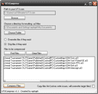

UT3Compress
Simple Compression Assistant
Introduction
Designed to make the process of compressing Unreal Tournament 3 gamefiles easier, UT3Compress allows users to access the compress commandlet in UT3 by way of a simple GUI that includes a few extra features such as skipping files if they exist already. Effectively, this allows users to "synchronize" a redirect directory with a gamefiles directory.
Taken from the readme file: UT3Compress is a painfully simple application that lets users who have patched their game to support the compress command easily compress files. It creates compressed files that are .uz3 format. It was written in .NET/C#.
Advantages of UT3Compress
{kind=link}

Using UT3Compress rather than a batch file has a few key advantages:
- Suppression of commandlet windows to prevent clutter
- Automation of compressing multiple files at once (scales)
- Files that exist can be skipped, allowing a user to "synchronize" two directories
- UT3Compress can be easily run in Win2003 Server with RDP access
- Simplistic GUI makes it easy for novice users unfamiliar with cmd syntax
Download program or source code
To run this program you need the Microsoft .NET Framework 2.0, an install of Unreal Tournament 3 and a patched UT3.exe so it supports the compress commandlet (patch 1.2 and greater). As of version 1.1 I don't intend to support this program any longer and will only update it for extreme bugs. For this reason, you can find the source of the program below. If you choose to continue work on this program and use some of my code, all I ask is that give proper attribution to my code.
There are a few known issues with the UT3 compress commandlet and thus with this program.
Most of the game assets have to be loaded prior to executing the compress commandlet.
This means that over 200mb+ of gamefiles will be loaded into memory prior to the compression
of files. In the first release of this program (v1.0) it did this for each file individually,
now it only does it once and passes each file as an argument reducing compression time
dramatically. Also, using the UT3.com instead of the raw UT3.exe is highly reccomended, but
not too important in v1.1 of this program since background windows are suppressed.
Download UT3Compress.zip (Win x86)
Download UT3Compress-Source.zip (C#)